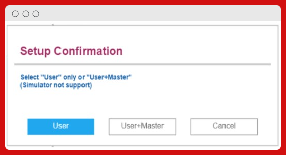
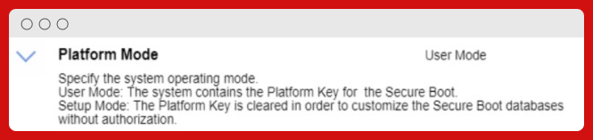

Duration 00:00:30
Introducción
En este caso se trata de una BIOS UEFI también, pero mucho más actual.
Muestro en la siguiente página la lista de opciones de seguridad que tenemos disponibles.
Duration 00:04:00
SECCIÓN PRINCIPAL OPCIONES DE SEGURIDAD
SECCIÓN PASSWORD
- Supervisor Password: → Habilitar/Deshabilitar. Para asignar una clave de Supervisor, que nos pedirán al entrar en la BIOS.
- Lock UEFI BIOS Settings: → Nos permite bloquear las opciones de la BIOS, para no poder modificar sin antes poner la clave de Supervisor.
- Password at Unattended Boot: → Pedir la clave a la hora de un arranque desatendido. Por ejemplo; al usar el arranque por WOL (Wake On Lan). Podríamos deshabilitar como medida de seguridad externa. Ya que no se podría arrancar el equipo mediante Red.
- Password at Restart: → Nos pedirá una clave al reiniciar el equipo.
- Password at Boot Device List: → Clave para acceder a la lista de dispositivos de arranque.
- Password Count Exceeded Error: → Habilitar un contador de ingreso erróneo de clave, a la hora de entrar a la BIOS.
- Set minimum length: → Activar un mínimo de longitud a la clave.
- Power-On-Password: → Habilitar el pedir una clave al arrancar el equipo. Se debe activar "Password Beep", en el submenú "Alarm". Para poder habilitar esta opción. Tiene el mismo proceso que "Supervisor Password".
- Hard disk 1 Password: → Habilitar una clave al primer disco duro. Esta opción también requiere previamente activar la característica de "Password Beep".
- Tendremos 2 opciones:
- User only: Se usa la clave del usuario que hemos configurado.
- User+Master: En este caso la del usuario y opcionalmente una clave "maestra", puede usar para dar acceso al Administrador.

SECCIÓN SECURITY CHIP
- Security Chip type: → Vemos el tipo de chip de seguridad que tenemos instalado. En este caso "TPM 2.0".
- Security Chip: → Podremos activar/desactivar el chip de seguridad.
- Security Reporting Options: → Tenemos un submenú con opciones de reporte de seguridad.
- SMBIOS Reporting: → Podremos habilitar/deshabilitar los reportes de información que produzca nuestra BIOS.

- Clear Security Chip: → Nos sirve para limpiar la claves de encriptación del Chip. No podremos acceder a la información encriptada que tuviéramos en el chip.
- Physical Presence for Clear: → Podremos habilitar/deshabilitar que nos salga una ventana para asegurar que un usuario físico debe de confirmar o no el limpiado del Chip.
SECCIÓN UEFI BIOS UPDATE OPTION
- Flash BIOS Updating by End-Users: → Podremos poner si queremos que a la hora de actualizar nuestra BIOS requiera meter "Supervisor Password" o no.
- Secure Rollback Prevention: → Permite o no, el querer realizar "flasheos" a versiones de UEFI BIOS anteriores o no.
- Windows UEFI Firmware Update: → Nos permite activar/desactivar la opción de tener actualización de firmware UEFI de Windows.
SECCIÓN MEMORY PROTECTION
- Execution Prevention: → Podremos activar/desactivar siempre que nuestro sistema operativo lo permita. Esta opción puede prevenir de ataques virus/gusanos que se puedan crear a través de un "Buffer Overflow". Si lo tenemos desactivado, estará el sistema en estado normal.
SECCIÓN VIRTUALIZACIÓN
SECCIÓN I/O PORT ACCESS
- Ethernet LAN: → Habilitar/Deshabilitar la tarjeta de red y en el sistema.
- Wireless LAN: → "" "" la tarjeta Wi-Fi.
- Bluetooth: → "" "" el chip bluetooth.
- USB Port: → "" "" los puertos USB; no afecta a puerto "Thunderbolt" o puerto * USB "Type-C".
- Integrated Camera: → "" "" la cámara que nos viene con el portátil.
- Microphone: → "" "" el micrófono que nos viene en el portátil.
- Fingerprint Reader: → "" "" el lector de huellas del portátil.
SECCIÓN INTERNAL DEVICE ACCESS
- Internal Storage Temper Detection: → Podremos activar/desactivar, activando nos detectará si hemos quitado algún dispositivo de almacenamiento interno o disco externo cuando el sistema está en modo hibernación. Si lo extraemos en ese estado el sistema se apagará y cuando vuelva arrancar desde la hibernación. Los datos no guardados se perderán.
SECCIÓN ABSOLUTE PERSISTENCIE® MODULE
- Current Setting: → Podremos habilitar/deshabilitar o permanentemente deshabilitado.
- Current State: → Se refleja la opción que elegimos arriba.
SECCIÓN INTEL® SGX CONTROL
- Intel® SGX Control: → Tenemos para habilitar/deshabilitar o que lo gestione el software "SGX" para UEFI Boot OS.
- Current State: → Refleja la opción elegida.
- Change Owner EPOCH: → Nos permite borrar la información persistente que tenga la tecnología de INTEL SGX.
SECCIÓN DEVICE GUARD
- Device Guard: → Podemos activar o no. Que solo se puede arrancar desde HDD/SSD internos. Para habilitar esta opción debe de estar activada "Supervisor Password".
SECCIÓN THINKSHIELD SECURE WIPE
- ThinkShield secure wipe in App Menu: → Podemos activar/desactivar el "ThinkShield Secure Wipe" en el menú de la APP usando F12.
SECCIÓN SECURE BOOT CONFIGURATION
- Secure Boot: → Para activarlo o desactivarlo. Si lo activamos prevenimos que se arranquen por ejemplo OS no autorizados. Y tendremos que ponerlo en "UEFI Only" and "CSM Support: no".

- Platform Mode: → Específicas el modo de proceder del sistema operativo. Tenemos 2 opciones "User Mode" o "Setup Mode".
- User Mode: El sistema mantiene la "Platform Key" para el "Secure Boot".
- Setup Mode: La "Platform Key" es limpiada en orden para personalizar las bases de datos del "Secure Boot" sin autorización.
- Reset to Setup Mode: → Esta opción sirve para resetear la actual "Platform Key" e instalar tu la tuya propia y personalizar las firmas de las bases de datos del arranque seguro.
- Restore Factory Keys: → Está opción sirve para restaurar de fábrica las claves y certificados de las base de datos del arranque seguro.
- Clear All Secure Boot Keys: → Nos permite limpiar todas las claves de las bases de datos que haya almacenadas en el arranque seguro. Y poder instalar tus propias claves y certificados.
SECCIÓN BOOT

- Network Boot: → Elegir el orden de prioridad en el arranque en Red cuando usemos "Wake On Lan".
- Boot Mode: → Como queremos que sea el arranque, que nos muestre la pantalla de "Diagnóstico" o no.
- Option Key Display: → Que nos muestre o no las teclas de las opciones posibles en el arranque.
- Boot Device List F12 Option: → Habilitar/Deshabilitar que se nos muestre la opción de F12 para lista los dispositivos de arranque. Solo podremos usar esta opción cuando el Supervisor entrar al Setup.
- Boot Order Lock: → Opción que nos permite bloquear para modificar el orden de arranque.